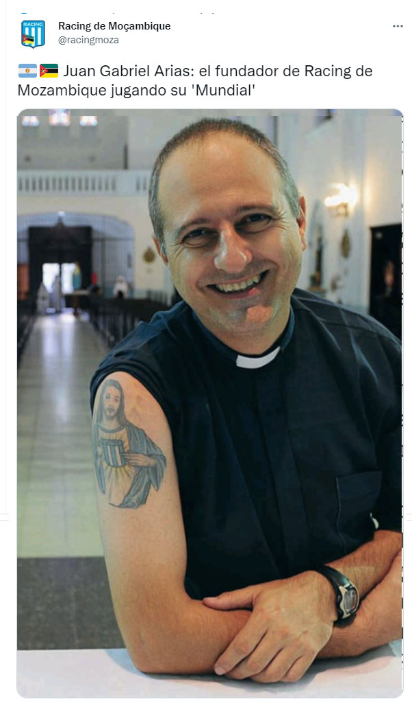

Juan Gabriel Arias: el fundador de Racing de Mozambique jugando su 'Mundial'

@P_JuanGabriel
es cura misionero y 'enfermo de la cabeza' de
@RacingClub
. Instalado en Mangundze, una pequeña localidad ubicada a 240km de la capital del país, Maputo, fundó el Racing de Mozambique